Vào Cài đặt tivi → Giới thiệu → bấm 7 lần vào Bản dựng để mở Tuỳ chọn nhà phát triển.
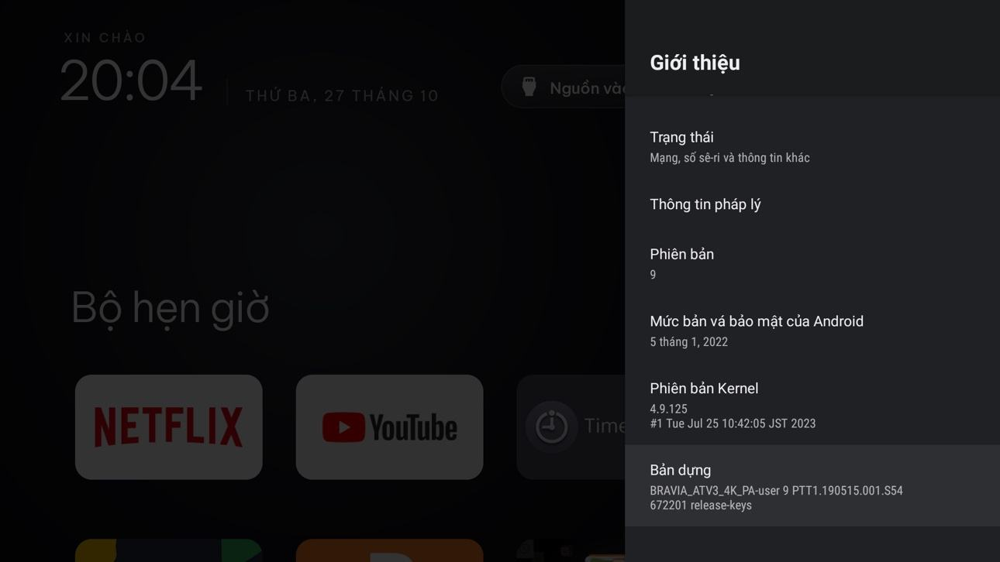
Bật được trở về vào Tuỳ chọn nhà phát triển → bật Gỡ lỗi ADB (có tivi hiện là Wi-Fi, USB, Gỡ lỗi không dây).
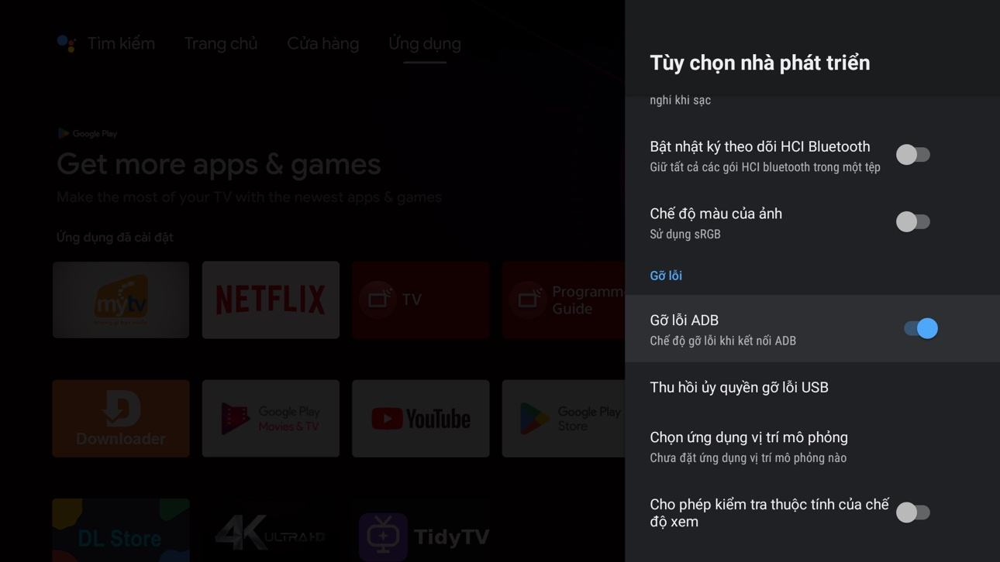
Vào Cửa hàng Google Play (cửa hàng ứng dụng). Tải ứng dụng Downloader như hình.
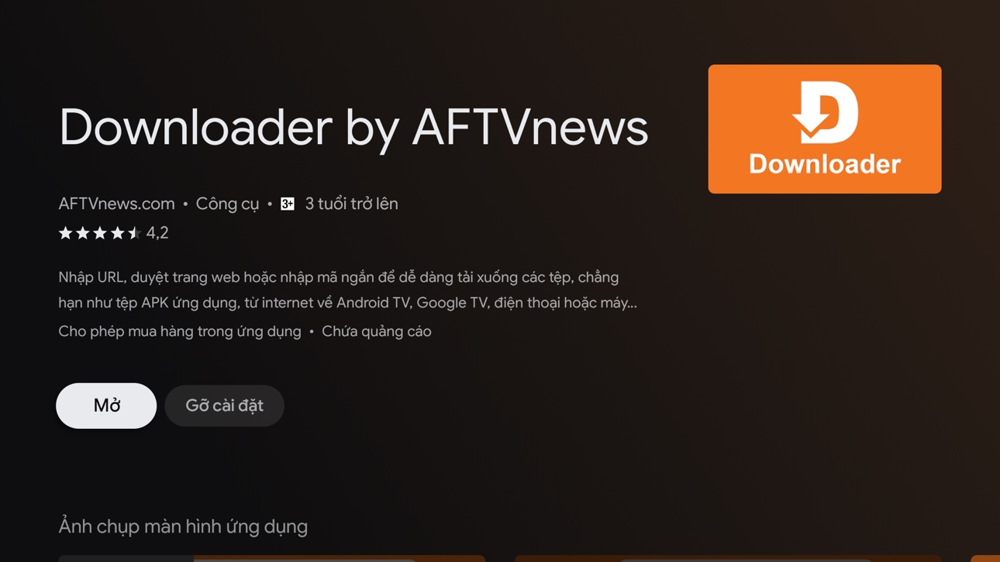
Xong viết code này:
6305765
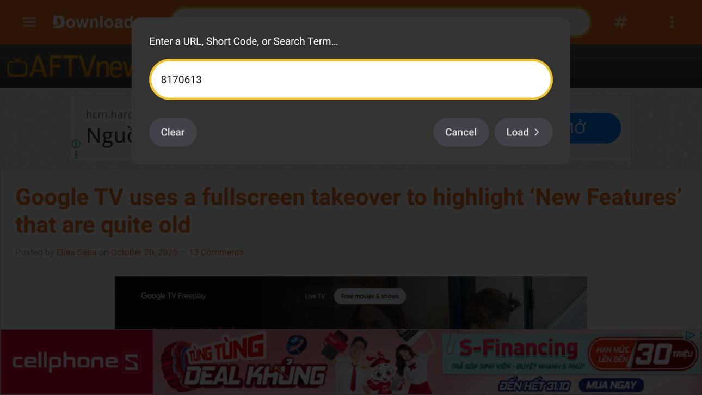
Tải về và cài đặt như bình thường.
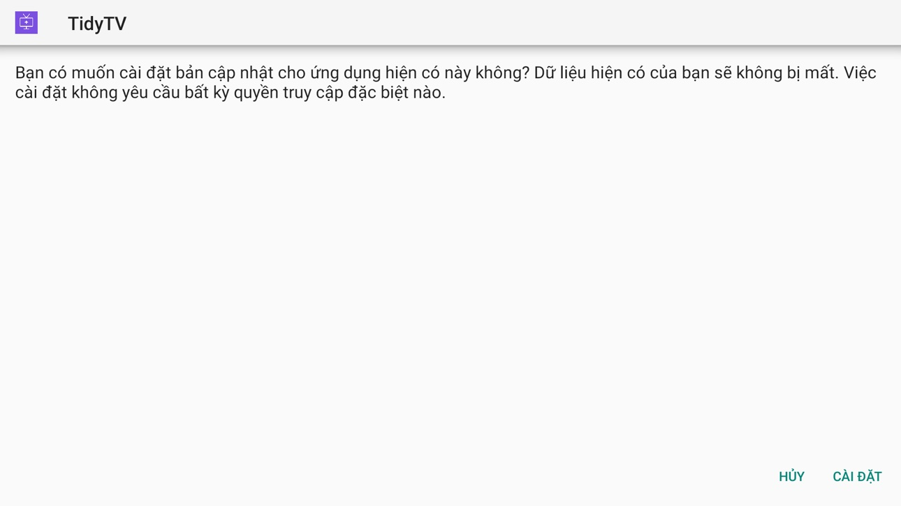
Ảnh 1: Bấm vào lấy IP TV → Kết nối. Hiện bảng cho phép thì tích vào ô luôn cho phép và bấm Cho phép.
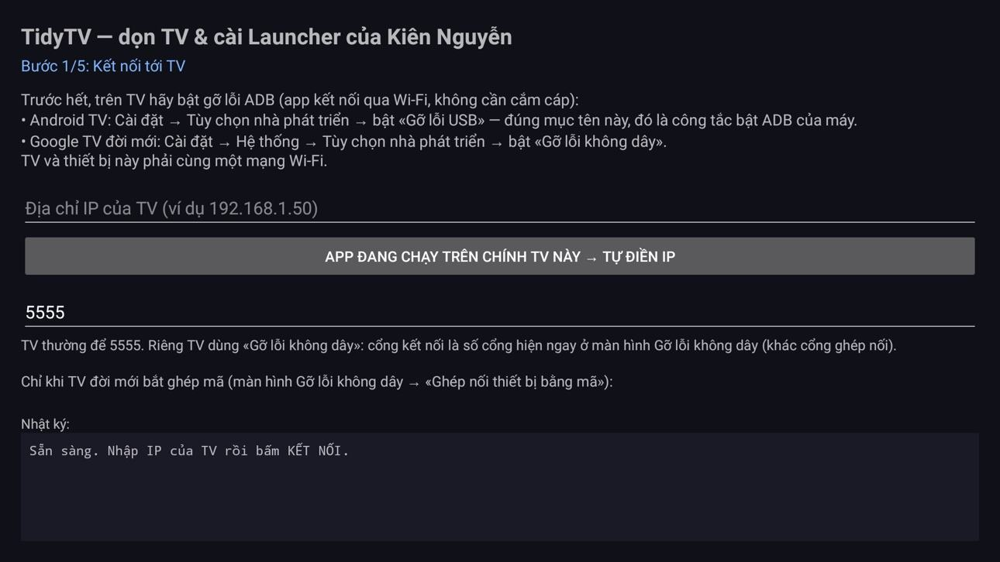
Ảnh 2: Xem Model tivi đúng chưa. Chưa thì bấm mũi tên chọn model. Nếu đúng rồi thì bấm Sao lưu.
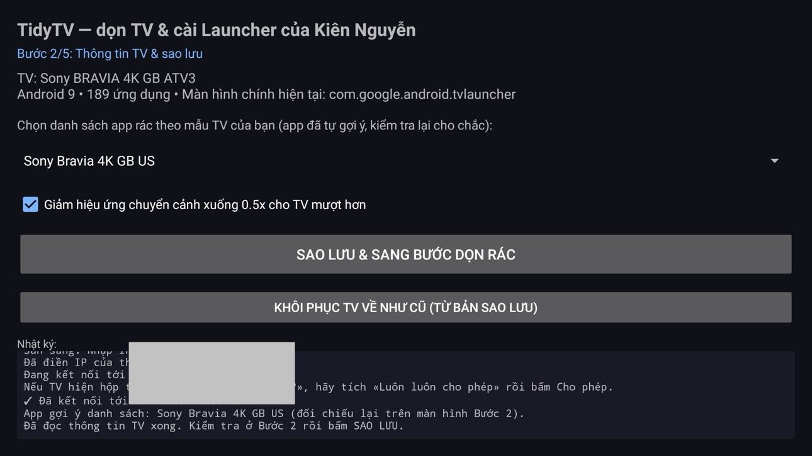
Ảnh 3: Như hình là đã dọn hết app rác. Bình thường nó sẽ có những app rác ở đó. Muốn dọn app rác thì bấm tất cả ứng dụng được chọn. Còn không thì bỏ qua.
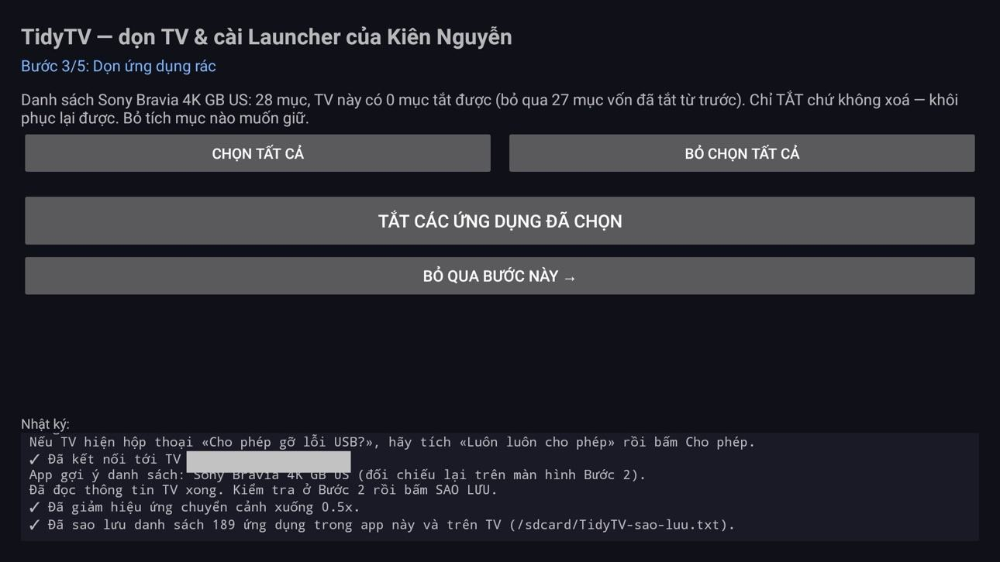
Ảnh 4: Bấm vào Cài đặt Launcher.
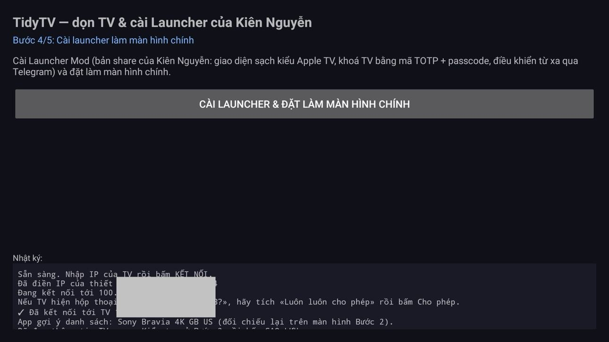
Ảnh 5: Thử bấm Home xem về launcher gốc không. Nếu vẫn bị launcher gốc. Nếu dính launcher gốc thì vào lại app tích vào ô xong bấm Tắt là được.
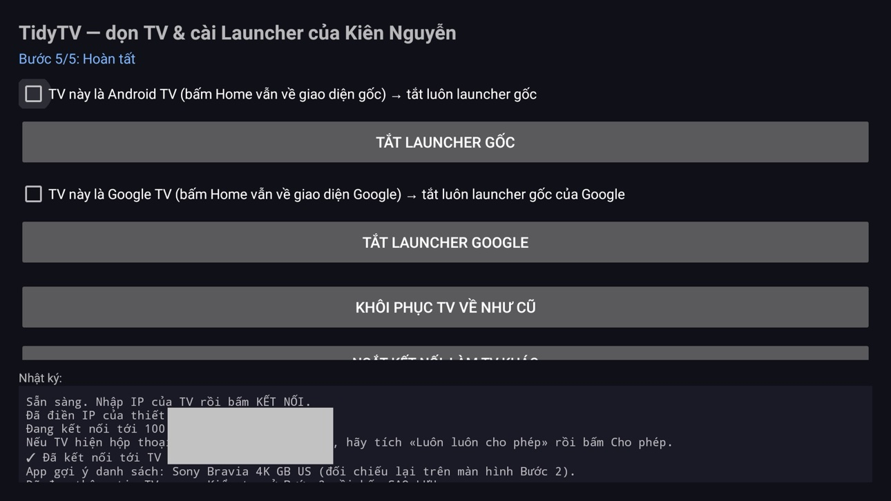
Xong bước 3 bấm Home thì mặc định đã launcher mình cài rồi. Nhưng phải đặt passcode. Ảnh 1: Tạo mã Authenticator. Vào app Authenticator trên điện thoại quét mã là được. Nếu không dùng thì không cần cài. Nếu mở bằng mã này sẽ có giới hạn số phút (mặc định 30 phút).
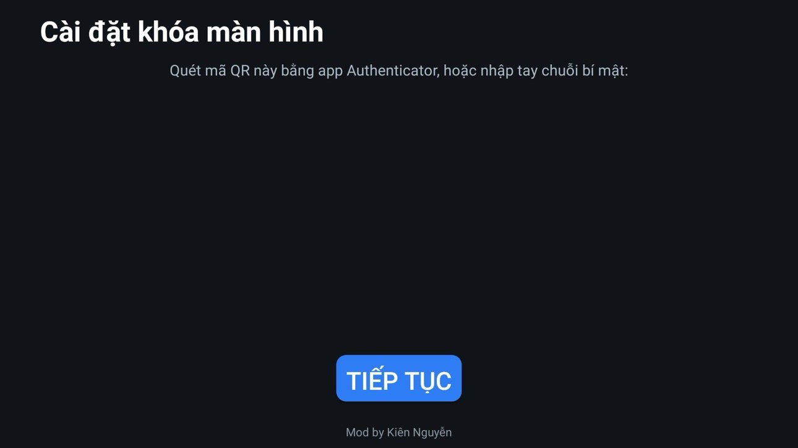
Ảnh 2: Tạo passcode. Pass này quan trọng. Phải nhớ và đừng cho con trẻ biết. (nhập 2 lần, nhập lần 3 mở khoá launcher) vậy là cài đặt mật khẩu đã xong. Mở bằng mã này sẽ không giới hạn thời gian.
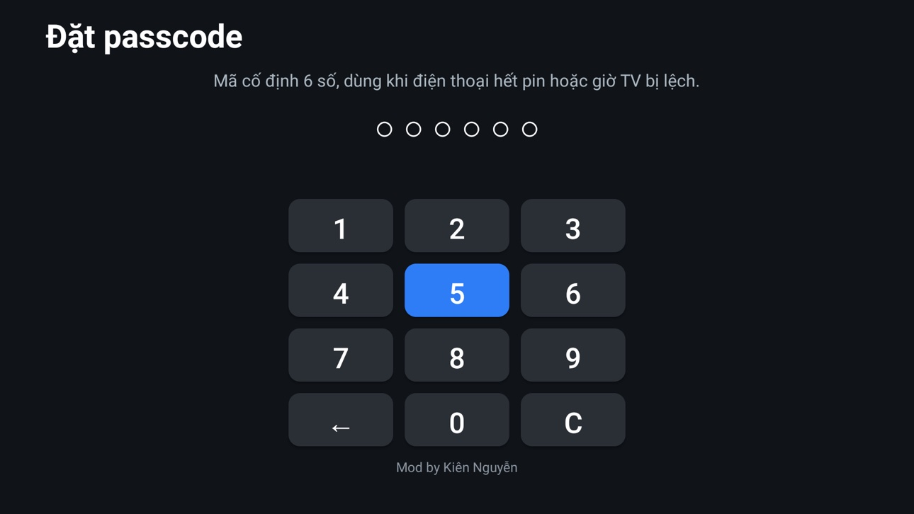
Ảnh 3 là kết quả.
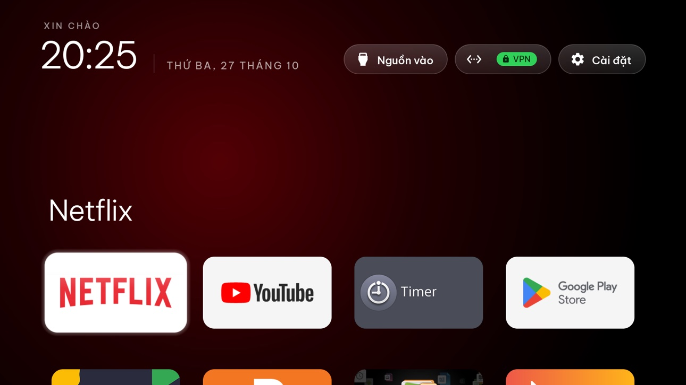
Ở màn hình chính bấm Cài đặt sẽ hiện ra 4 dòng. Dòng đầu là Cài đặt launcher bấm vào đó (bắt buộc điền passcode mới vào được).
Ảnh 1: Khoá màn hình TOTP là để đổi mã Authenticator và passcode. Thời gian thì có thể chỉnh 1-999 phút. Nếu muốn remote từ xa qua bot Telegram thì bấm vào sẽ ra Ảnh 2.
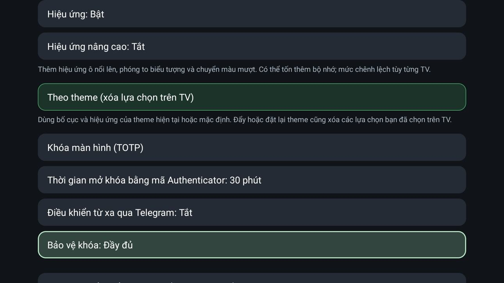
Ảnh 2: Dòng đầu là Token API bot.
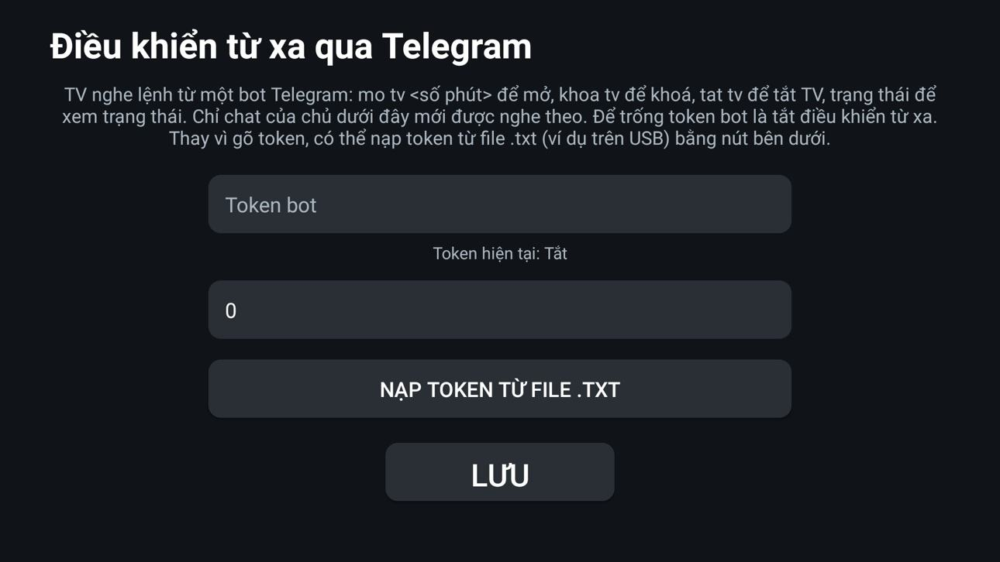
Cách tạo bot và lấy Token API: vào Telegram tìm @BotFather, bấm Bắt đầu rồi gửi /newbot. Đặt tên cho bot, rồi đặt username cho bot (phải kết thúc bằng chữ bot). BotFather trả về một dòng mã dài — đó là Token API của bot.
Có mã Token API thì tạo 1 file ***.txt (*tên gì cũng được) bắn lên tivi bằng Drive hoặc cách nào đó thuận tiện. Còn không nhập tay 46 kí tự =))))))
Dòng 2 là ID chat.
Cách lấy ID chat: vào Telegram tìm @userinfobot, bấm Bắt đầu. Bot trả về một dãy số — đó là ID chat của bạn. Nhập dãy số đó vào dòng 2 trên TV rồi bấm LƯU.
Xong vào app Telegram tìm con bot vừa tạo bấm /start. Nó trả về lệnh là ok.
Có gì không hiểu cứ nhắn tin mình sẽ hỗ trợ.